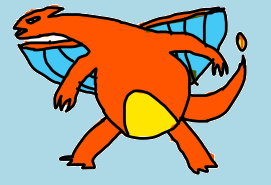
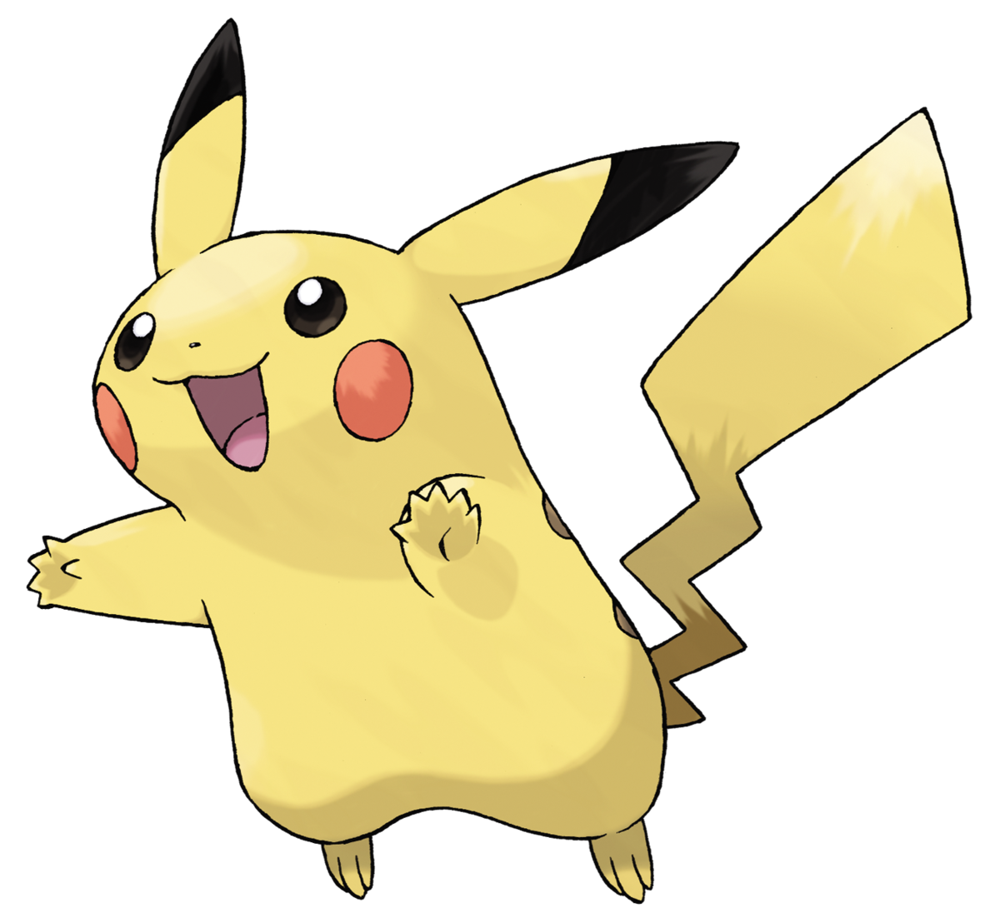
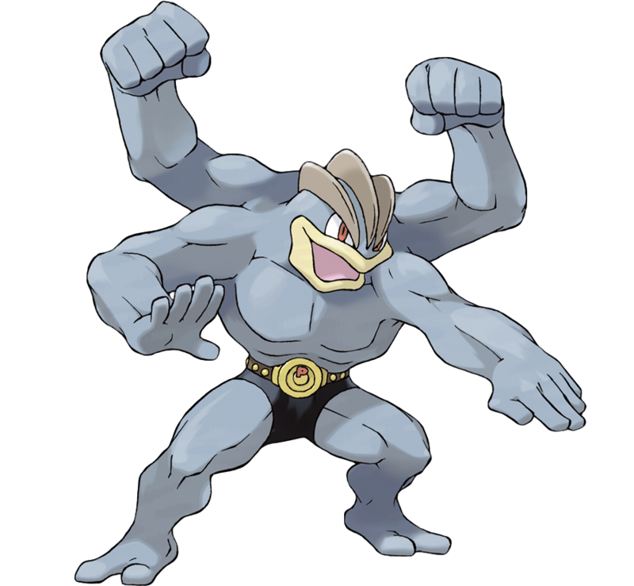

Tipos de Pokémon
Tipo Agua
Los Pokémon de tipo Agua son conocidos por su afinidad con el agua y habitan principalmente en cuerpos de agua.
Pokémon Famoso:
Tipo Fuego
Los Pokémon de tipo Fuego son conocidos por su control sobre el fuego y su capacidad para lanzar ataques de fuego.
Pokémon Famoso: 
Tipo Planta
Los Pokémon de tipo Planta suelen ser de naturaleza vegetal y tienen habilidades relacionadas con la vegetación.
Pokémon Famoso: 
Tipo Eléctrico
Los Pokémon de tipo Eléctrico tienen la capacidad de generar electricidad y utilizar ataques eléctricos.
Pokémon Famoso: 
Tipo Psíquico
Los Pokémon de tipo Psíquico tienen habilidades mentales y a menudo pueden leer mentes o manipular objetos con la mente.
Pokémon Famoso: 
Tipo Volador
Los Pokémon de tipo Volador son conocidos por su capacidad para volar y su afinidad por los cielos.
Pokémon Famoso: 
Tipo Lucha
Los Pokémon de tipo Lucha son expertos en combate cuerpo a cuerpo y utilizan movimientos de lucha.
Pokémon Famoso: 
Tipo Fantasma
Los Pokémon de tipo Fantasma suelen ser esquivos y a menudo tienen habilidades sobrenaturales.
Pokémon Famoso: 
Tipo Hielo
Los Pokémon de tipo Hielo tienen la capacidad de congelar objetos y áreas circundantes.
Pokémon Famoso: 
Tipo Tierra
Los Pokémon de tipo Tierra son conocidos por su conexión con la tierra y la capacidad de usar ataques de tierra.
Pokémon Famoso: